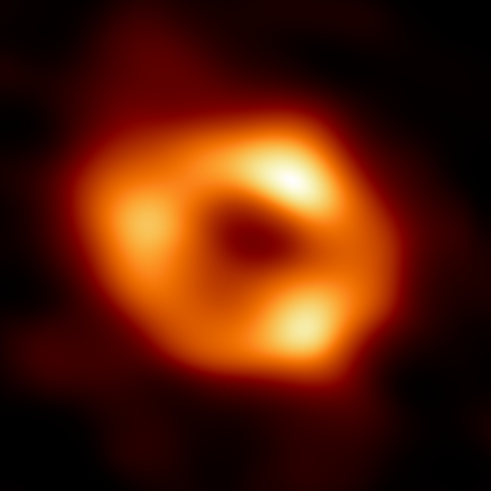
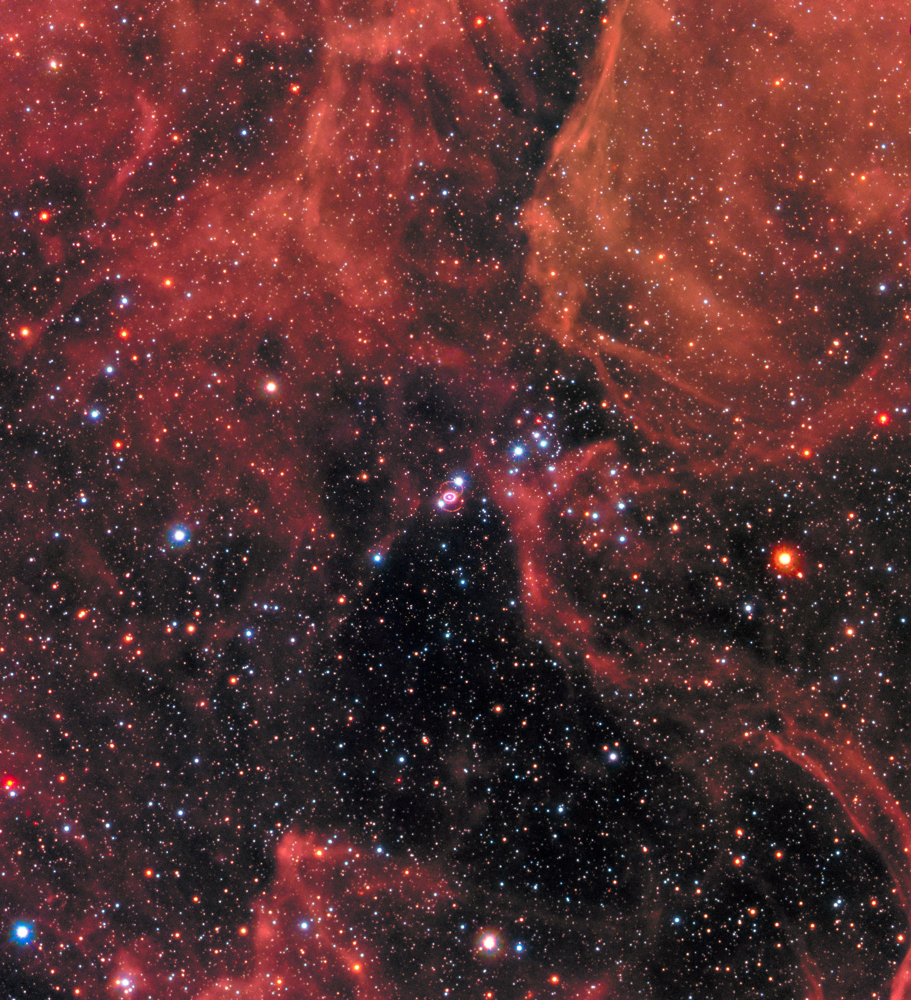
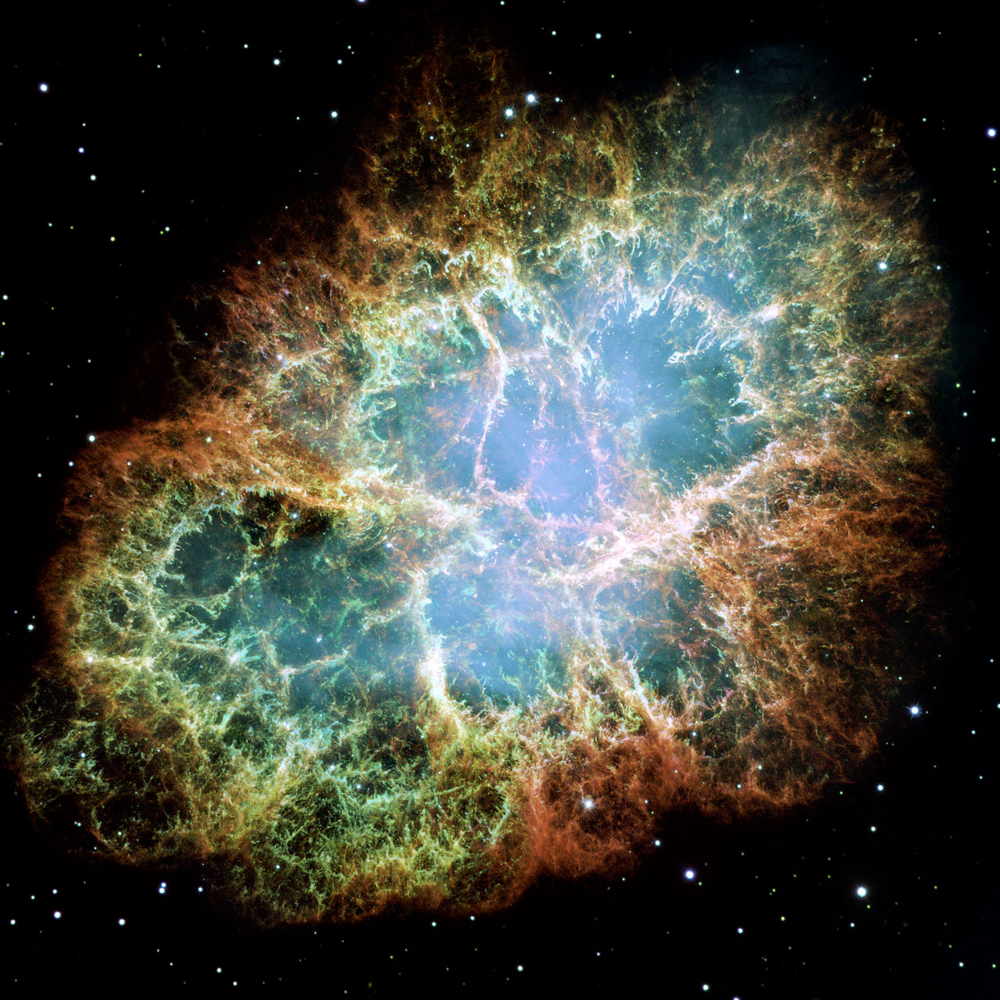

“黑洞吞噬光”“潮汐撕碎天体”“超新星照亮一整个星系”，经常出现在同一类宇宙故事里，却来自不同物理问题。引力可以使一个系统长期安静，也可以使核心在不到一秒内剧烈改变。亮光又未必来自引力坍缩：白矮星的热核爆炸，走的是另一条道路。要理解这些极端现象，首先得把“能否逃走”“能否保持完整”“能否获得内部支撑”分开。
三个著名边界正好分别对应这些问题。事件视界涉及时空中的因果联系，洛希极限涉及天体各处的差异引力，钱德拉塞卡极限涉及白矮星内部的支撑能力。它们不是包住黑洞的三层外壳，也没有相同的单位。沿着这三个问题走下去，可以同时理解天体怎样被破坏、恒星怎样爆发，以及这些爆发怎样成为测量遥远宇宙的工具。
普通天体表面附近，一束向外发出的光可以最终到达远处。黑洞的事件视界是这样一种边界：从它以内发出的信号，无法传到远方外部的观察者。这里说的是因果路径的限制，不是表面有某种吸光材料把光截住；视界也不是一层能够站立、撞击或剥落的固体。视界与黑洞结构
在牛顿引力里，我们可以给一个物体更高的初速度，使它逃离中心天体；把逃逸速度公式中的速度设为光速，恰好会得到 这个尺度。但这并不是黑洞的完整推导。牛顿图景无法决定光的全部运动，也没有说明视界内未来的时空方向。黑洞需要广义相对论：物质与能量改变时空几何，自由物体和光沿这种几何允许的路径运动。
对不旋转、不带电、孤立球对称的黑洞，广义相对论给出视界的面积半径 。 是引力常数， 是黑洞质量， 是真空光速。这个半径不是说内部物质摊在一个如此大小的球面上，而是描述边界的几何尺度。旋转黑洞的结构会不同，不能把这一个公式当成所有黑洞外观的精确图纸。
每个太阳质量对应约 2.95 千米：十个太阳质量的非旋转黑洞，视界尺度约三十千米；四百万太阳质量则约一千二百万千米。质量越大，视界越大。不过“边界更大”并不意味着在那里一定受到更猛烈的拉伸，潮汐问题稍后会给出相反趋势。这已经提示，黑洞质量、局部加速度和身体两端的加速度差，不能混成一句“引力越大”。
视界也不使远处引力凭空增强。在球对称近似下，若把太阳换成相同质量的黑洞，地球所在距离处的主要引力作用并不会因为“成为黑洞”就突然变得无限大，轨道不会因此自动掉进去。当然失去太阳辐射对地球完全是另一回事。物体能否落入，还要看角动量、初始轨迹以及有无相互作用带走轨道能量。
黑洞周围的明亮吸积盘往往就涉及能量和角动量输运。气体不能只靠“被吸引”就立即径向掉入；它绕行时的相互作用，使部分角动量向外转移，物质逐渐向内。引力势能释放可以转成热和辐射，所以视界以内没有信号逃出，与视界外环境极其明亮并不矛盾。喷流也来自黑洞附近的磁化物质与旋转系统，不能说我们看到了从视界内部逃出的喷射。
一条证据来自附近恒星的运动。银河系中心人马座 A* 周围，有恒星在很小区域内以很高速度运行。长期记录其中 S2 等恒星的位置与光谱，能够推断轨道和中心质量；S2 的约十六年轨道将约四百万太阳质量限制在很紧致的区域。继续测量还能检验引力红移和轨道进动，而不仅是给一个牛顿质量数值。银心恒星轨道
这一推理先得到的是“如此小区域内有如此大质量”。要把它解释成黑洞，还要排除能长期稳定、与观测相容的替代天体集合，并结合其他证据。质量测量不是对视界的直接拍照。不同方法约束不同尺度，合在一起才使黑洞解释变得很强。

图 1｜EHT 对 2017 年 1.3 mm 观测的重建图像，2022 年发布；由若干重建结果取平均。亮环来自视界外等离子体辐射及强引力对光路的影响，中央暗区是黑洞阴影，不能直接把暗区边缘当视界半径。橙黄色是显示配色。Credit: EHT Collaboration；CC BY 4.0；图源 C12-I1。
EHT 的另一条证据来自近视界尺度的射电辐射。分布在地球不同地区的望远镜同时接收信号，利用甚长基线干涉提高角分辨率，再从不完整采样中重建图像。我们看到的是明亮环状结构与中央暗区，不是相机拍到了实体黑球。光在黑洞附近弯曲，有些路径被捕获，有些绕行后抵达我们，因而“阴影”的角尺度一般大于简单视界投影。辐射模型、源随时间变化与成像算法都必须纳入比较。
还有一类证据不靠电磁波：紧致天体相互绕行、合并，可以改变时空，向外传播引力波。地面干涉仪测量的是极小的距离相对变化；信号随时间的频率与振幅，与广义相对论给出的双黑洞并合波形相比较。恒星轨道、近视界射电成像和引力波各自都有模型依赖，却并非在重复测同一个东西。引力波证据
宇航员在轨道上处于自由落体，身体各部分大致一起运动，仍可能感觉失重。但如果头和脚受到的加速度不相同，相对运动就会产生拉伸。这种差异作用称潮汐；普通行星、恒星与黑洞都能产生。小天体整体受到的引力大小，并不能直接判断它会不会碎裂。
设中心质量 ，小物体两端沿径向相隔长度 ，距中心 ，并且 ，在弱场牛顿近似下，两端引力加速度差的量级是 。它随距离的三次方变化，比整体引力的反平方更敏感。近端与远端的引力都朝向中心，只是近端更强；扣除整体自由落体加速度，才出现沿径向拉长、横向压缩的相对趋势。
洛希极限就是把这种差异，与小天体维持完整的能力比较。若它主要靠自身引力聚合、材料强度可以忽略，那么密度低、自引力弱的对象更容易被潮汐破坏。把半径 、密度 的小天体自引力尺度写为 ，潮汐尺度为 ，两者相当时得到 。这是量级推理；它揭示密度和中心质量的作用，未给出流体变形、同步旋转等细节下的精确系数。
这个推理中小天体半径约去了，是因为模型同时让自引力和潮汐差随尺寸成正比。真实小石块具有材料强度，情况就不同；很小的物体往往主要靠化学键保持完整，不能拿一个自引力流体卫星的极限直接断言所有碎石都会解体。轨道偏心率、转动、内部孔隙和分层也会改变破坏方式。洛希模型与强度
碎裂之后也不保证成为漂亮的行星环。碎片可能撞击中心天体、沿偏心轨道散开，或部分逃离；形成较稳定、近乎同平面的环，还涉及碰撞耗散与角动量。洛希极限可以说明环区为何不容易重新聚成大卫星，却不是“越过一条线就立即做出土星”的机器。黑洞的潮汐瓦解事件同样可以产生返回的碎片和明亮耀发，但其轨迹与发光过程要另行建模。
在不旋转黑洞中，把视界尺度 代入潮汐量级 ，会得到视界附近差异作用约随 变化。也就是说，比较相同的身体长度，超大质量黑洞的视界处潮汐可以弱于小黑洞；可能先完整越过大黑洞的视界，再在更深处遭到破坏。这个量级关系与相对论的径向潮汐结果相符，但不能用弱场公式描述全部强场轨迹，更不表示视界外环境安全。视界与潮汐不是同一界限
由此，两种边界的分工变得很具体：视界管信号能否逃往远方，潮汐管一个有限尺寸物体能否保持完整。天体可以在视界外被撕裂，也可以在另一些情况下先穿过视界。两者并无普适的重合位置。
超新星首先是观测到的剧烈增亮事件。它的分类历史上主要从光谱开始：有显著氢谱线的归入 II 型，没有显著氢谱线的归入 I 型；I 型再按硅、氦等光谱特征区分 Ia、Ib、Ic。这个分类依据不是直接看见核心发生了什么，但能与物理解释对应起来。通常 Ia 来自白矮星热核爆炸，Ib、Ic 与 II 则主要属于大质量星核心坍缩，差别与爆发前保留了多少氢、氦外层有关。分类与机制
核心坍缩的起点，是大质量星已演化出无法继续维持的致密核心。核心中的电子俘获降低电子简并支撑，高能光子拆解重核还会消耗能量，坍缩便迅速发展。接近核密度后，内核的压缩受到强烈抵抗，向外形成冲击波。但冲击波穿过物质时会损耗能量，可能停滞；所以“压到最密、反弹、全部炸开”并不充分。
大量释放的中微子能穿出核心，其中少部分在外侧沉积能量；对流、流动不对称和其他过程有助于让部分爆发重新向外推进。不同核心并非都能成功推出外层，一部分坍缩会形成黑洞，回落也能改变最终遗迹。核心主要向内，包层在成功爆发中主要向外：这两个方向同时发生，正是超新星与普通“爆炸球”想象不同的地方。坍缩与冲击
数量估算可以说明中微子为什么重要。把一个 核心缩到半径 12 千米，按 粗估引力能释放量级，为几乘 焦耳。这里牛顿式只作能量尺度估算，精确紧致结构需要相对论。这个巨大能量库主要以中微子带走，不能全算成我们看到的光；其中较小一部分便足以参与给抛出物提供约 焦耳量级的动能。超新星可见光虽惊人，却不是整个爆发能量预算中最大的部分。
1987 年，大麦哲伦云中的 SN 1987A 给出了罕见的直接证据：在首批可见光观测前约两小时，多处探测器记录到短促的中微子事件。这不是中微子在十几万光年途中大幅超过光速；核心信号可以较快离开，而向外传播的冲击波需要时间到达恒星外层，随后才形成显著的可见光增亮。不同信使从不同过程与不同位置释放，抵达顺序因而携带内部时序信息。SN 1987A 的证据

图 2｜SN 1987A 遗迹，中心区域 2017 年由 Hubble/WFC3 观测，周围恒星颜色结合 WFPC2 数据。亮环主要来自爆发前约两万年抛出的物质，后来与爆发相关过程相互作用；并非 1987 年才从星上整体吹出的一圈。B、V、Hα、I 多波段合成。Credit: NASA, ESA, and R. Kirshner (Harvard-Smithsonian Center for Astrophysics and Gordon and Betty Moore Foundation) and P. Challis (Harvard-Smithsonian Center for Astrophysics). CC BY 4.0；图源 C12-I2。
长期影像还能追踪外流与原有星周物质相遇的过程。亮环提醒我们，超新星并不是在空白背景上突然开始：爆发之前的风、质量转移与失质量历史，已经布置了周围环境。随后出现的明亮热点、尘埃和谱线，又约束抛出物与环境的相互作用。SN 1987A 的中心光谱也提供了支持中子星存在的证据；它与“已经直接拍到裸露中子星表面”有区别。
另一条道路则从白矮星开始。典型碳氧白矮星的核心不再靠稳定氢聚变供能，而主要靠电子简并压力支撑。如果双星相互作用、吸积或合并使某些区域达到碳反应的条件，反应放热可能迅速加热周围物质。简并压力对温度变化不如普通热气体敏感，初始膨胀降温的调节能力较弱，因此可发生热核失控，并传播燃烧，形成 Ia 型超新星。它的核心问题是快速核放能，不是先把铁核心压成中子星。
白矮星接近钱德拉塞卡质量时的爆炸，是重要模型，却不是唯一可能。白矮星合并、低于该质量的白矮星在氦层点火后触发核心爆炸等通道，都在研究范围内；观测也显示爆发涉及的质量并非全一样。不同通道贡献多少，仍不能靠一幅通用示意图断言。约 1.4 个太阳质量表示特定白矮星支撑模型的上限，并不能替代核反应、双星演化与爆炸过程。Ia 的多种通道
正常 Ia 热核爆炸通常能破坏白矮星，不沿核心坍缩的路径统一留下中子星。某些较特殊热核事件可能有幸存遗迹，因而“所有对象必然全毁”也太强。白矮星还可以只在吸积的表面氢层发生热核爆发，形成新星，保留主体并可能再次爆发；新星与 Ia 超新星不是仅仅名字有无“超”的同一过程。
明亮的光也需要传播出来。爆发初期，抛出物致密且不透明，辐射要经过吸收、散射和扩散才能离开；随着物质膨胀，透明度改变，光变曲线随之上升、到峰值、下降。在 Ia 中，爆发生成的放射性镍-56，经钴-56向铁-56衰变，持续提供能量。峰值和衰减因而同时记录核产物、抛出物质量、透明度及膨胀，而不是一瞬间“闪光功率”的直接测量。
蟹状星云 M1 是另一种观测窗口。它与 1054 年记录的客星有关，内部有一个快速旋转中子星，即蟹状脉冲星。爆发抛出物形成的细丝，与脉冲星风作用形成的连续辐射区域，在影像中互相交织。它是超新星遗迹；猎户座星云则是恒星诞生区。两者都叫星云，却处在物质循环的不同环节。蟹状星云
脉冲星还不断把自转能量送给周围高能粒子。星云持续发光不意味着 1054 年的光子被困住，今天仍原样飘在云里；冲击加热、粒子加速、磁场与辐射过程，都在接着工作。观测遗迹的膨胀速度和元素谱线，可以帮助重建爆发，但须处理与环境相互作用后的改变。今天的形状不是爆发瞬间的定格。

图 3｜蟹状星云 M1，Hubble/WFPC2 多次观测拼接。该图的谱线通道包含 OI、SII、OIII，不能认作标准 SHO；显示色也不是肉眼色。Credit: NASA, ESA and Allison Loll/Jeff Hester (Arizona State University). Acknowledgement: Davide De Martin (ESA/Hubble). CC BY 4.0；图源 C12-I3。
设一个各向近似均匀辐射的光源，已知本征光度 ，在距离 处收到辐照度 。忽略吸收、取静态空间近似，能量分摊到半径为 的球面，便有 ，或者 。如果两次爆发具有相同的已校准光度，而一个收到的光只有另一个的四分之一，就可估计前者距离为后者两倍。问题在于怎样知道它们“本来一样亮”。超新星测距
Ia 不是每次都具有相同峰值。经验上，正常 Ia 中较亮的对象一般下降较慢、光变较宽；颜色和其他特征又提供进一步信息。研究者用这些观测关系估计每个事件应有的本征亮度，再比较实际接收到的光。这才称标准化烛光。它不是把每张照片任意调到同样亮，也不是知道了“约 1.4”便不再测量。
光变宽度与亮度有联系，并不奇怪。核反应产物决定热源，抛出物质量和状态影响光多久才能逃出，温度又改变电离与透明度。不过经验标准化不要求我们已经解决全部爆炸机制；可靠关系可以先在观测样本中建立，再用物理解释约束。但如果远古与近处样本存在尚未建模的系统差异，就可能影响距离。有效的测量工具也需要持续检查适用条件。
尘埃是另一重困难。尘埃会使光减弱、改变颜色，若把它全部当成距离，就会把天体估计得过远。超新星本身的颜色变化，又不等于全部来自尘埃；校正需结合多波段、光谱与宿主环境。远处样本还受到选择效应影响：暗事件容易漏掉，明事件更容易进入样本。标准化可以减小散布，不会自动消除这些偏差。
前面的反平方关系还给出误差传播的直观结果。保持收到的光不变，如果把本征光度估计高了 10%，距离会高估约 。这看起来比亮度误差小，但若一整批远处对象朝同一方向偏差，增加样本数量也不会让它像随机误差那样自动平均掉。距离研究最在意的不只是每个点有多散，还包括整体标尺有没有倾斜。
实际使用中，通常用绝对星等和距离模数表达同一个关系。在相同波段、已校正吸收的简单情形下，； 是视星等， 是绝对星等，pc 是秒差距，约 3.26 光年。它只是反平方关系与对数星等定义的组合。距离增为十倍，视星等增加五等，收到的光变成原来的百分之一。对数没有制造新的物理，而是方便比较巨大距离范围。
近处 Ia 的绝对亮度需要标定，常借助有其他距离指标的宿主星系建立标尺。造父变星、红巨星分支顶端等方法各有观测与模型条件；不同标定之间的交叉检查，决定标尺是否可靠。若只比较某一范围内距离的相对变化，可以少依赖绝对零点，但仍不能忽略颜色、样本变化和系统误差。距离标定与宇宙学
在更遥远宇宙，静态空间中的几何距离不再是唯一距离定义。光传播途中宇宙在膨胀，光子能量与抵达速率会改变，观察波段也对应不同的发射波段。对全波段光度与接收到的全波段通量，仍可把 写作定义，其中 称光度距离；但它与红移的关系要由宇宙学模型给出。若使用固定滤镜测量，就必须处理对应的发射波段与 K 校正，不能把前面的同波段距离模数无条件搬到高红移。把光度距离直接解释为今天拿尺量出的直线间隔，也会漏掉传播中的演化。
谱线红移提供了另一个量：已知某条谱线在实验室的波长 ，测到它位于 ，便定义 。在大尺度宇宙学背景里，波长随空间尺度因子增大而拉长， 反映发射到接收之间的尺度比。这样，一次超新星同时给出标准化亮度所推的光度距离，以及谱线所测的红移。
如果宇宙膨胀历史不同，相同红移对应的光度距离就不同。1990 年代的超新星团队比较大量 Ia 事件，发现远处对象的距离—红移关系支持晚期加速膨胀。这个结论不是“看到星系在照片上跑得越来越快”，而是将经过校正的距离与若干膨胀历史预测比较，并排查吸收、演化等替代解释；后来又与其他宇宙学证据结合。加速膨胀
加速膨胀并不自动告诉我们驱动它的成分在微观上是什么。宇宙常数是重要的描述，其他暗能量模型也受观测约束；“测到加速”与“已经知道暗能量全部性质”之间，还有很大研究距离。同样，Ia 的距离用途可靠到一定精度，不等于它的每一种触发通道都已定案。测量与物理机制可以相互推动，却不能把一边的成功拿来替另一边宣布结束。
这样的宇宙学结果还解释了为何要保留普通 Ia 的分类、光谱和光变信息。若把不同机制的事件混在一起，只因为它们都在短时间内变亮，就失去标准化关系的依据。若只保存一张峰值照片，没有随时间的多波段记录，也无法完成同样的校正。高质量天文素材不只是一张最壮观的图：数据随时间、波长和空间怎样组织，本身就是知识的一部分。
黑洞还带来一个容易被视觉类比掩盖的差别：远方观察者与自由落入者对时间的记录不同。在理想、非旋转黑洞的描述中，落入物体向外发出的信号会越来越红移，抵达间隔越来越大，光越来越弱。远方看见的“越来越慢”，不是物体最终卡在实体壳上；信号接收方式与当地经历必须分开。自由落入者可在有限自身时间内越过视界，若潮汐和环境允许，并不一定在边界处撞到某种墙。黑洞中的时间
这类解释仍有适用范围。真实吸积环境不是干净真空；黑洞旋转与时空扰动也会改变细节。关于经典理论中的奇点，广义相对论给出数学上的异常，但那并不意味着已经观测到“无限密度的一粒小球”。在最极端区域，现有理论需要更完整的物理。能够可靠测量视界外运动，不能使视界内所有叙述都成为观测事实。
回到三个边界，白矮星上限是质量尺度，洛希极限是有模型条件的距离尺度，事件视界是因果边界。它们分别把内部物态、有限尺寸结构和时空几何带入天文学；不能互换，却可以在同一个天体事件里同时起作用。白矮星不一定爆炸，恒星核心坍缩不一定产生明亮超新星，碎片不一定形成环，黑洞附近的物体也不一定马上落入。
最明亮的爆发与最暗的边界，由此没有组成一个模糊的“宇宙极端事物”清单。它们连接成了一条可以检验的链：先弄清能量与支撑怎样改变，再辨认留下的遗迹与传播出的信号，最后用这些信号测量遥远世界。一个恒星核心的灾变，能够变成宇宙历史的刻度，正是因为我们既敢用物理关系向外推，也保留每一步的观测条件与不确定性。